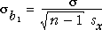

Standard error of the least squares slope
The least squares slope, b1, is the best estimate of β1. In the previous page, we explained that it has a normal distribution with mean

The standard deviation of b1 is the standard deviation of this distribution and can be written as:

where sx is the standard deviation of the explanatory variable, X. You will not need to remember this formula, but it gives insight into which situations will provide the most accurate estimate of β1.
The standard error of the least squares slope, b1, is lowest when:
The first two influences on accuracy are not surprising but the third needs a little more thought. It is easiest to understand the effect of sx by considering the most extreme situation.
If all x-values are the same (sx = 0), the distribution of Y will also be the same for each and there will be no information about β1. If the x-values are similar, the errors will tend to mask any differences in the mean response and β1 will be poorly estimated.
The greater the spread of x-values, the smaller the errors relative to the difference in response means, so the greater the accuracy of the least squares estimates.
Demonstration
The diagram below shows the distribution of the least squares slope for samples from a normal linear model.
Use the pull-down menu to alter the sample size. Observe that the spread of the distribution of b1 is lowest when the sample size is large.
Change the sample size back to 20, then adjust the response standard deviation. Observe that the spread of the distribution of b1 is lowest when the response standard deviation is small.
Change the response standard deviation back to a medium value, then adjust the spread of X. Observe that the spread of the distribution of b1 is lowest when the spread of X is high.
(Click Accumulate then take a few samples at any combination of the three characteristics to verify that the blue normal distributions are indeed correct!)
Implications for data collection
So, if we are able to select which x-values will be used, we should choose values spread over the range we are interested in, to give a reasonable value of sx.
(Note that the arrangement that maximizes sx has half the values at each endpoint. However, such a design does not give us any information for diagnosing non-linearity and should therefore be avoided.)